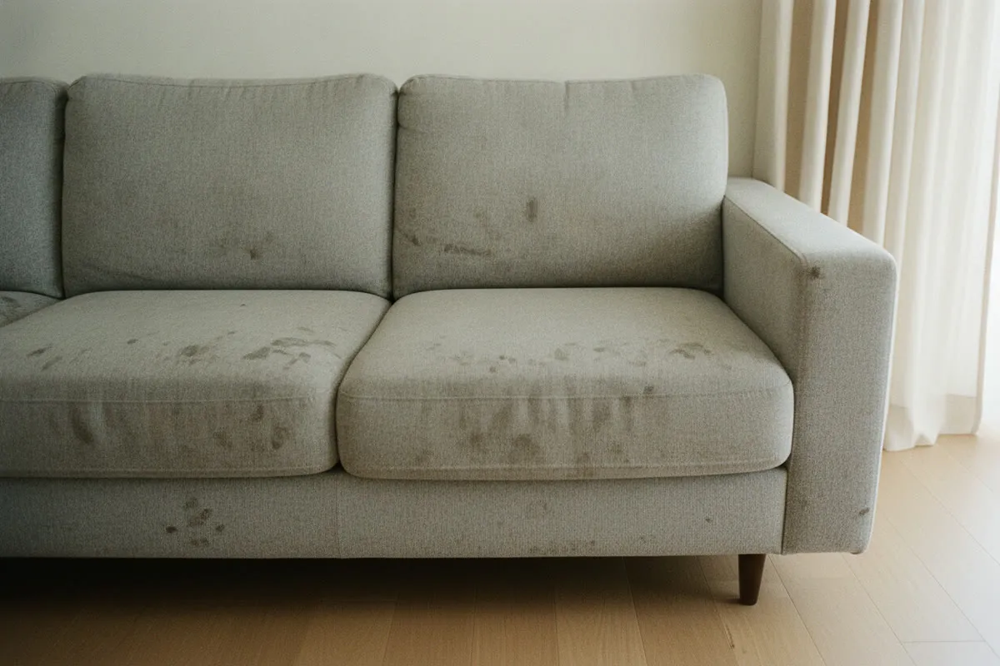
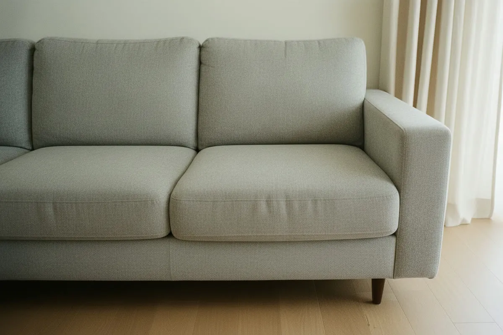

Потяните ползунок. Слева вещь, какой её видит мастер на выезде, справа она же после экстракторной чистки. Кадр один и тот же: комната, ракурс и свет не менялись.


До чистки ПослеДиван светлый, тканевая обивка Ползунок двигается мышью, пальцем и стрелками на клавиатуре
Пыль, шерсть животных, разводы от воды, кофе, чай, сок, детские неожиданности, следы от рук на подлокотниках.
Застарелая краска, зелёнка, чернила и ржавчина. Мастер скажет об этом на осмотре, до начала работы.
Натуральную кожу и замшу, шёлк и вискозу без маркировки состава, антиквариат и ковры ручной работы.